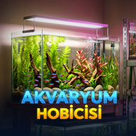

Gizlilik Politikası
Özet
Akvaryum Hobicisi senden ad, e-posta ya da hesap bilgisi istemez ve kendi sunucusunda hiçbir kişisel veri tutmaz. Oyun ücretsizdir; isteğe bağlı ödüllü reklamlar (oyunu hızlandırmak için izlediğin reklamlar) Google AdMob tarafından gösterilir.
Oyun kaydı
Oyun ilerlemen (akvaryumların, balıkların, paran ve ayarların) yalnızca kendi cihazında saklanır ve hiçbir sunucuya gönderilmez. Uygulamayı sildiğinde bu veriler de silinir.
Reklamlar (Google AdMob)
Reklam yalnızca sen istediğinde, bir hız düğmesine basıp "Reklam izle" dediğinde gösterilir. Reklamları gösteren Google AdMob; reklamı sunmak, ölçmek, sahtekârlığı önlemek ve (izin verirsen) kişiselleştirmek için şu bilgileri toplayabilir:
- Reklam kimliği (iPhone'da IDFA yalnızca takip izni verirsen; Android'de reklam kimliği)
- IP adresinden çıkarılan yaklaşık konum (ülke / şehir düzeyi)
- Reklamla etkileşim bilgileri (gösterim, tıklama) ve cihaz bilgileri (model, işletim sistemi, dil)
- Uygulama çökme ve performans bilgileri
Bu veriler Google tarafından işlenir: Google, iş ortaklarının sitelerini ve uygulamalarını kullandığınızda verilerinizi nasıl kullanır · Google Gizlilik Politikası.
İzinler ve seçimlerin
- Avrupa Birliği / Birleşik Krallık: Oyun ilk açılışta Google'ın onay penceresini gösterir. Seçimini daha sonra oyun menüsündeki "Reklam Gizlilik Ayarları" düğmesinden değiştirebilirsin.
- iPhone takip izni: iPhone'da "takip etsin mi?" sorusuna "Hayır" dersen reklam kimliğin paylaşılmaz; yine de reklam izleyip ödül alabilirsin. Bu izni Ayarlar → Gizlilik ve Güvenlik → Takip bölümünden değiştirebilirsin.
- Android: Ayarlar → Gizlilik → Reklamlar bölümünden reklam kimliğini sıfırlayabilir ya da silebilirsin.
- Reklam izlemek tamamen isteğe bağlıdır; oyunun tamamı reklamsız da oynanabilir (1x ve 2x hızlar her zaman ücretsiz).
Bildirimler
Oyun, izin verirsen balıklarının durumu hakkında hatırlatma göndermek için cihazında yerel bildirimler planlar. Bu bildirimler tamamen cihazında oluşturulur; hiçbir veri dışarı gönderilmez. İzni istediğin zaman cihaz ayarlarından geri alabilirsin.
Çocukların gizliliği
Oyun 13 yaşından küçük çocuklardan bilerek kişisel veri toplamaz. Oyunda gösterilen reklamlar "genel izleyici" (G) içerik düzeyiyle sınırlandırılmıştır.
Değişiklikler
Bu politika değişirse güncel hali bu sayfada yayınlanır.
İletişim
Sorularını cihangundogmus@gmail.com adresine gönderebilirsin.
Privacy Policy (English)
Akvaryum Hobicisi does not ask for your name, email or any account, and the developer does not store any personal data on its own servers. Your game progress is saved only on your device and is deleted when you delete the app.
Advertising. The game shows optional rewarded ads (only when you choose to watch one to speed up the game) served by Google AdMob. To deliver, measure and, with your permission, personalize ads and to prevent fraud, Google may collect your advertising identifier (on iPhone, the IDFA only if you allow tracking), approximate location derived from your IP address, ad interaction data, device information and crash/performance data. See How Google uses information from sites or apps that use its services and the Google Privacy Policy.
Your choices. Users in the EEA/UK are shown Google's consent form and can change their choice at any time from "Reklam Gizlilik Ayarları" (Ad Privacy Settings) in the game menu. On iPhone you can deny tracking in the system prompt or later in Settings → Privacy & Security → Tracking. On Android you can reset or delete your advertising ID in system settings. Watching ads is always optional.
Notifications. If you allow it, the game schedules local notifications about your fish; these are created entirely on your device and no data leaves it.
Children. The game does not knowingly collect personal data from children under 13. Ads are limited to the general-audience (G) content rating.
Changes to this policy will be posted on this page. Contact: cihangundogmus@gmail.com.
© 2026 Akvaryum Hobicisi